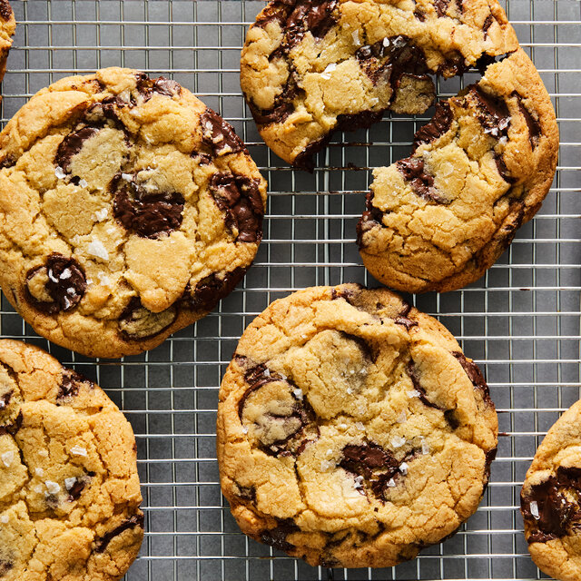

Best Chocolate Cookies

This is the best chocolate cookies recipe ever! No funny ingredients, no chilling time, etc.
Just a simple, straightforward, amazingly delicious, doughy yet still fully cooked, chocolate chip cookie that turns out perfectly every single time!
Ingredients
- 2 cups white sugar
- 1 ¼ cups margarine, softened
- 2 large eggs
- 2 teaspoons vanilla extract
- 2 cups all-purpose flour
- 1 teaspoon baking soda
- ⅛ teaspoon salt
- 1 cup chopped walnuts
Directions
- Preheat the oven to 350 degrees F (175 degrees C).
- Cream sugar and margarine in a large bowl until light and fluffy. Beat in eggs, one at a time, then stir in vanilla.
- Combine flour, cocoa, baking soda, and salt in a separate bowl. Add to the creamed mixture and mix until just blended. Stir in walnuts. Drop spoonfuls of dough 2 inches apart onto ungreased cookie sheets.
- Bake in the preheated oven until edges are set and centers are soft, 8 to 10 minutes. Let sit briefly before transferring to wire racks to cool completely.
Nutrition Facts (per servings)
- 116 Calories
- 7g fat
- 14g Carbs
- 2p Protein